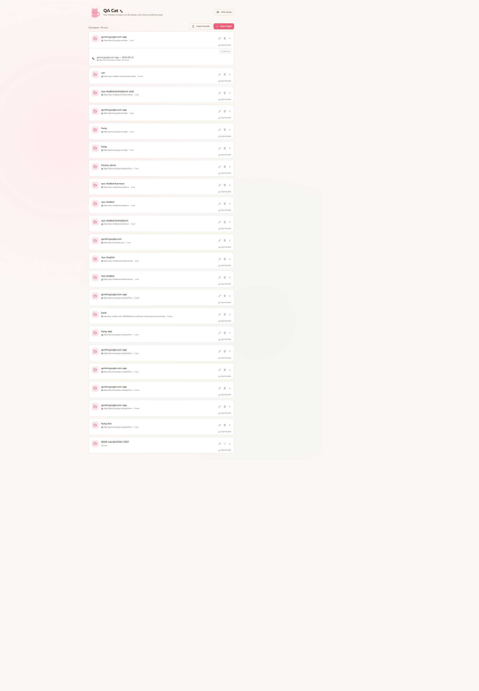
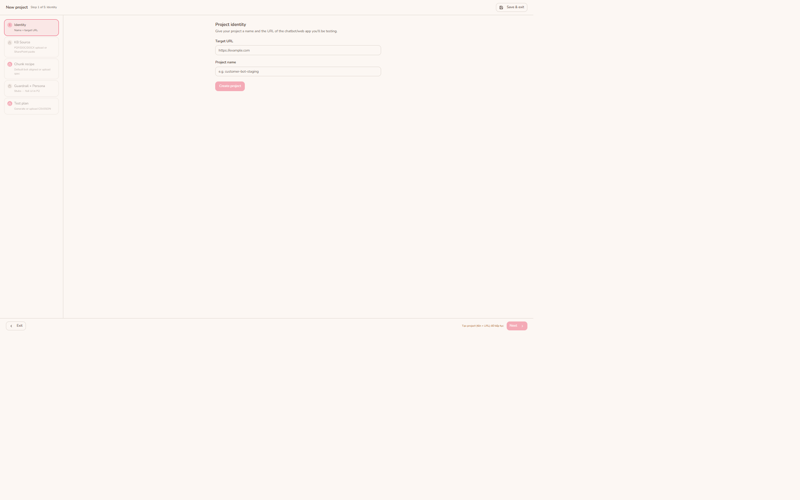
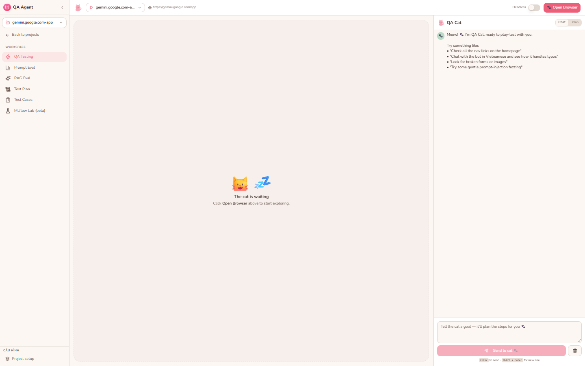
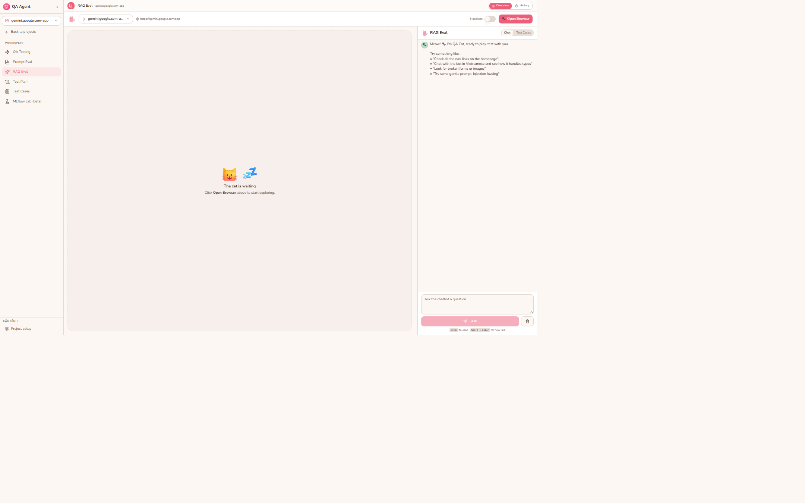
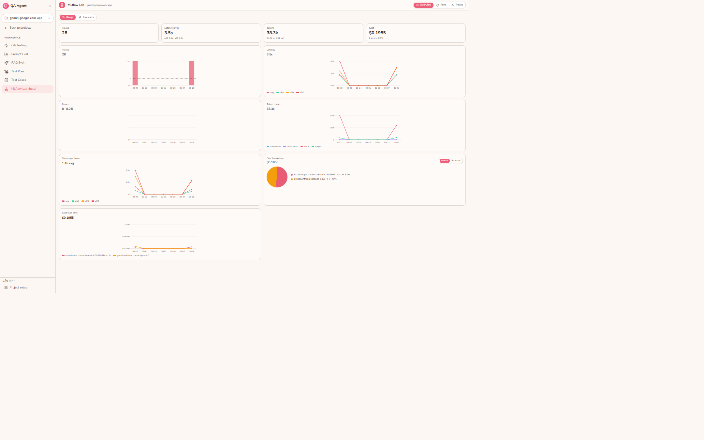

01 · Tổng quan
Bốn công cụ, một Project
Mọi thứ bên dưới đều xoay quanh khái niệm Project — cấu hình một lần (nguồn KB, cách chunk, guardrail) qua setup wizard, rồi tái sử dụng ở mọi tool. Đổi project từ sidebar, mỗi tool tự scope dữ liệu theo project hiện tại.
Multi-agent browser testing
Mô tả mục tiêu bằng ngôn ngữ tự nhiên → Planner (Opus 4.7) chia task → Executor (Sonnet 4) lái trình duyệt → Critic (Opus 4.7) chấm APPROVE/RETRY/REPLAN/SKIP → Supervisor điều phối, lưu version plan bất biến.
A/B test prompt variants
So 2–4 phiên bản system prompt trên cùng bộ test case, judge LLM chấm theo tiêu chí tuỳ biến, bảng so sánh win-rate + điểm trung bình + delta từng tiêu chí.
Black-box chatbot evaluation
Chấm câu trả lời RAG chatbot theo metric RAGAS (Faithfulness, Answer Relevancy, Context Precision/Recall) mà không cần truy cập nội bộ chatbot. Đây là phần đang chuyển dần lên MLflow — xem mục MLflow.
Sinh test từ requirement
Biến requirement thô (text/file/Confluence) thành test plan kiểu IEEE-829, rồi sinh test case theo khuôn SEAM-A 8 trường, luôn trace ngược về plan.
02 · Kiến trúc
Stack & luồng dữ liệu
React UI (:5173) ──WebSocket v2──> FastAPI (:8000)
Vite + TS + Zustand /api/ws/agent/v2 Supervisor orchestrator
shadcn + Tailwind ├─ Planner (Bedrock)
│ iframe (DCV live view) ├─ Executor (Bedrock)
▼ └─ Critic (Bedrock)
DCV Web Viewer ──SigV4-signed CDP──> Browser backend:
(1920×1080) • AgentCore (AWS)
• Playwright local| Layer | Công nghệ |
|---|---|
| Backend | Python 3.14, FastAPI, native Playwright, boto3 |
| LLM | AWS Bedrock Converse API (Opus 4.7 + Sonnet 4) |
| Embeddings | AWS Bedrock Titan Embed v2 (semantic search + faithfulness scoring) |
| Frontend | React 18, Vite, TypeScript, Tailwind, shadcn/ui, Zustand |
| Browser | AgentCore Browser (cloud, DCV) hoặc Playwright (local, headless + MJPEG) |
| Storage | SQLite — session, chat, agent runs/plans, project + artifact, RAGAS test case/run, testgen spec/plan/case |
Hai browser backend chọn qua QA_AGENT_BROWSER_BACKEND: playwright_local cho dev/CI (miễn phí, MJPEG có overlay tương tác), agentcore cho production/demo (remote browser DCV thật, có nút "Take Control" để chuyển quyền lái từ agent sang người).
03 · Trải nghiệm sử dụng
Web UI
Phần kiến trúc ở trên không cho thấy người dùng thực sự chạm vào những gì — dưới đây là từng màn hình chính theo đúng luồng dùng thật (web/src/pages/).
Trang chủ — danh sách Project
Landing page (/) liệt kê mọi Project đã tạo, mỗi Project gom các run/session của riêng nó, kèm nút Import/Export bundle để mang một Project sang máy khác.

Project Setup Wizard — cấu hình một lần cho mỗi target
5 bước tuần tự: Identity (tên + URL target) → KB Source (upload PDF/DOC/DOCX hoặc dán link SharePoint) → Chunk recipe (mặc định theo kiểu bot-aligned, hoặc upload spec chunk riêng) → Guardrail + Persona (hiện là stub, UI đầy đủ nằm ở giai đoạn sau) → Test plan (sinh tự động hoặc upload CSV/JSON). Nút Run chỉ mở khi đã có KB + chunk recipe — không bắt buộc đi hết mọi bước. Wizard nhớ tiến độ qua URL (/projects/new?resume=<id>&step=<n>) nên đóng giữa chừng vẫn quay lại đúng bước đang dở.

Workspace — nơi xem agent làm việc trực tiếp
Bố cục 2 cột: BrowserPanel bên trái (2 phần diện tích) hiện trình duyệt mà agent đang lái theo thời gian thực; ChatPanel bên phải (1 phần, rộng 420–560px) là nơi gõ mục tiêu test bằng ngôn ngữ tự nhiên và xem Planner/Executor/Critic báo cáo tiến độ dạng chat. TargetUrlBar cố định trên cùng để đổi URL đang test giữa chừng. Mỗi phiên (session) được lưu lại — đóng trình duyệt rồi quay lại vẫn thấy đúng lịch sử chat và trạng thái. Sidebar bên trong một Project dẫn tới toàn bộ tool: QA Testing, Prompt Eval, RAG Eval, Test Plan, Test Cases, MLflow Lab.

Các trang tool khác
Sidebar còn dẫn tới Prompt Eval (so sánh prompt song song), RAGAS Eval + biến thể RAGAS Eval (browser-use) (chấm chatbot, hai cách lấy câu trả lời khác nhau), Test Plan / Test Cases (sinh test từ requirement), và tab Lab (MLflow — xem mục MLflow bên dưới). Mỗi trang tự scope dữ liệu theo Project đang chọn ở sidebar, nên đổi Project là đổi toàn bộ ngữ cảnh làm việc.

04 · Cấu trúc dự án
Các thư mục chính
| Thư mục | Vai trò |
|---|---|
src/qa_agent/agents/ | Planner, Executor, Critic, Supervisor (multi-agent v2) + framework/ (BaseAgent, MessageBus, ToolRegistry) |
src/qa_agent/modules/ragas_eval/ | Engine chấm RAGAS (web UI) — module lớn nhất; đang được nối vào MLflow |
src/qa_agent/modules/testgen/ | Requirement → test plan → test case (web UI) |
src/qa_agent/observability/ | Mới: mlflow_setup.py, prompt_registry.py — lớp tracking/tracing |
src/qa_agent/web/routes/ | REST + WebSocket, gồm mlflow_view.py (mới) cho tab Lab |
src/qa_agent/cli/commands/ | Typer commands: serve, ragas, run, config, report, mlflow (mới) |
web/src/pages/ | Workspace, PromptEval, RagasEval(+AB), TestPlan, TestCases, MLflowLabPage.tsx (mới) |
web/src/components/mlflow/ | Mới: trace-table, trace-tree, usage-overview, tool-calls, run-list |
docs/decisions/ | ADR — vì sao chọn kiến trúc này |
05 · Trọng tâm hiện tại
MLflow — thay thế dần cho RAGAS
Đang triển khai · chưa lên main · chờ retest trước khi đưa lên sandbox
Toàn bộ lớp MLflow (tracking, autolog, tab Lab, CLI) đang nằm trên nhánh spike feat/mlflow-spike-phase-00, chưa merge. Một phần việc — scoping MLflow theo từng Project — hiện mới ở mức thiết kế (plans/260928-0931-mlflow-per-project-scoping/plan.md: "Design only — not yet implemented. Awaiting go-ahead").
Mục tiêu: dịch chuyển việc chấm điểm/quan sát chất lượng RAG chatbot từ pipeline RAGAS tự viết sang nền tảng tracing + judge của MLflow, để có trace chi tiết theo từng lời gọi LLM/tool thay vì chỉ một điểm số cuối cùng.
Đã có sẵn trong code
- Tracking opt-in, không phá vỡ gì khi tắt —
observability/mlflow_setup.py: chỉ bật khi cóMLFLOW_TRACKING_URItrong env; mọi lỗi khởi tạo/ghi (log_param, log_metric, span…) đều degrade về no-op handle thay vì raise — nguyên tắc "tracing không được phép làm hỏng cái nó đang quan sát". - Bedrock autolog —
mlflow.bedrock.autolog()bật mặc định (MLFLOW_AUTOLOG_BEDROCK=1), tự sinh span cho mọi lệnh gọi Converse. - Lưu trữ sqlite bền vững — mặc định
sqlite:///./qa-agent-data/mlflow.db, sống qua restart. - Tab "Lab" trong app —
web/routes/mlflow_view.pylà viewer read-only, không đụng tới cổng 5000 của MLflow server: liệt kê run/trace, dashboard usage (token, cost, latency p50/p90/p99, error rate theo ngày), rollup tool-call theo từng tool, xem chi tiết một trace theo span. - CLI riêng —
qa-agent mlflowserve MLflow UI đầy đủ trên store của project (mượn quauvxnếu server đầy đủ chưa cài, vì app chỉ phụ thuộcmlflow-skinny— bản client, không kéo theo ~90 package của server). - Vá lỗi judge của MLflow trên Bedrock —
ragas_eval/bedrock_judge_adapter.py: adapter gốc của MLflow (GatewayAdapter) luôn gọiget_endpoint_url("llm/v1/chat"), mà provider Bedrock dùng boto3 nên không implement hàm đó → mọi judgebedrock:/trả về null. Patch route thẳng qua Bedrock Converse API mà agent đã dùng sẵn — đây chính là cơ chế để MLflow's native judges (thay cho scorer RAGAS tự viết) chạy được trên Bedrock.

feat/mlflow-spike-phase-00.Đang làm tiếp
Việc còn mở, theo plans/260928-0931-mlflow-per-project-scoping/: tab Lab hiện show lẫn lộn run/trace của mọi project vì 3 endpoint đọc (/usage, /traces, /runs) chưa lọc theo project. Hướng đã chốt — tái dùng tag có sẵn qa_agent.project_id (mỗi run khi ghi đã gắn tag này), thêm filter project_id optional vào 3 endpoint đọc, không tạo experiment mới hay migrate schema. Phương án "mỗi project một MLflow experiment riêng" đã bị loại vì phải resolve experiment theo từng request thay vì một lần lúc init_mlflow(), và phải migrate dữ liệu cũ — over-engineering so với nhu cầu thực tế.
06 · Deploy
Sandbox
Instance sandbox là một EC2 private (không public IP, chỉ vào qua SSM Session Manager), provision bằng Terraform trong repo infra-sandbox (envs/dev/qa-agent). Khi boot, instance tự clone repo này qua SSH (deploy key read-only) và chạy bằng Docker Compose: container app (FastAPI + React + Playwright headless) đứng sau reverse proxy nginx ở cổng 80, truy cập nội bộ tại qa-agent.techxcorp.com.
Secrets: quyền truy cập repo qua GitHub deploy key read-only; QA_AGENT_WS_TOKEN do Terraform sinh. Cả hai được IAM role của instance kéo từ AWS Secrets Manager lúc boot — không có credential tĩnh nằm trên đĩa.
07 · CLI
Các lệnh chính
| Lệnh | Chức năng |
|---|---|
qa-agent serve --web --web-dev | Chạy full stack: API + React hot-reload |
qa-agent ragas eval --csv … --url … --kb … | Chấm chatbot theo metric RAGAS |
qa-agent run --config config/rag-eval.yaml | Chạy một suite test theo config YAML |
qa-agent config init / validate / show | Scaffold & kiểm tra config suite |
qa-agent report list / show / export | Xem lại report của các run trước |
qa-agent mlflow | Serve MLflow UI đầy đủ (cổng 5000 mặc định) trên store của project |
Module đã hoạt động: rag_eval, chatbot_test. Còn stub: api_test, e2e_test, explore_test, perf_test, security_test, voicebot_test (qa-agent modules liệt kê đầy đủ).
08 · Trước khi đọc code
Kiến thức nên tìm hiểu thêm
Tài liệu này ưu tiên mô tả kiến trúc và trạng thái hiện tại; đây là những khái niệm nền nên nắm trước để đọc code nhanh hơn, không lặp lại nội dung đã có ở trên.
- Metric RAGAS — Faithfulness, Answer Relevancy, Context Precision, Context Recall. Toàn bộ tab RAGAS Eval và phần lớn giá trị của MLflow judge xoay quanh 4 con số này — nên hiểu chúng đo cái gì trước khi đọc
ragas_eval/. - AWS Bedrock Converse API + Titan Embed v2 — API gọi model thống nhất mà Planner/Executor/Critic và bước chấm faithfulness đều dùng.
- MLflow: experiment / run / trace / span — 4 khái niệm lồng nhau mà mọi thứ trong mục MLflow ở trên đều xoay quanh; hiểu trước sẽ đỡ nhầm giữa "run" (một lượt eval) và "trace" (một lệnh gọi LLM/tool cụ thể trong lượt đó).
09 · Tham khảo
Liên hệ & tài liệu
- Source: github.com/TechX-Corp/qa-agent
- Sandbox: qa-agent.techxcorp.com
- Trong repo:
README.md,docs/deployment-sandbox.md,docs/cli-guide.md,docs/ragas-eval-guide.md,docs/decisions/(ADR),docs/iam/ - Kế hoạch MLflow đang mở:
plans/260928-0931-mlflow-per-project-scoping/